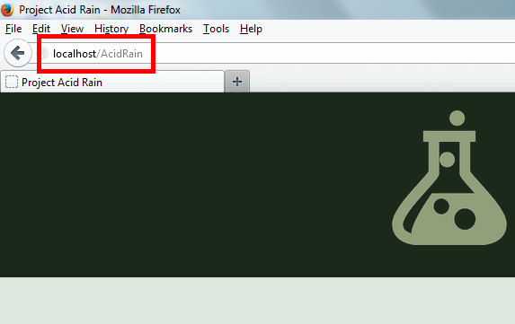

1.0 - Introduction
AcidRain is a project that intends to improve the efficiency and convenience of the Chemical Safety Sheet process by placing all Chemical Safety Sheets (CSS) along with their connections to the corresponding Material Safety Data Sheets (MSDS) on a dynamic database whose interface is accessible to all authorized personnel, allowing for a more effective way of storing data. This database and its interface will also give authorized users that ability to control and modify the database as the needs arises. The database interface is designed for use by our local EMU Science Department as well as the Harrisonburg Fire Department in case of emergency.
2.0 - Summary
In short, AcidRain provides a convenient way for schools, business, and organizations to store and dynamically view and modify chemical in an orderly fashion.
2.1 - Environment
The following Users, or Actors, will be present in the AcidRain environment:
2.1.1 - Developers
These are the AcidRain team, namely Isaac Tice, Stephan Quenzer, and Josiah Driver. Their role is to plan, create, analyze, implement, install, modify, verify, document, deploy, and maintain the software in its environment. They also interact with selected, intended users to discover and clarify user requirements and specifications.
2.1.2 - Modifiers
These are EMU students or faculty who are given access to the database interface with the ability to not only view data but insert new data as well as correct, edit, and delete existing data.
2.1.3 - Viewers
These are those who for any reason wish to view the data, for example, the Harrisonburg Fire Chief, but are not given authority to modify it.
2.1.4 - Constraints
Acid Rain has the following constraints: It must be user-friendly, it must be efficient and functional, and it must be secure. It will assume the EMU Science department will take care to only authorize the correct personnel and take care of the software piece responsibly. It will depend on the EMU server system and, as it will use primarily PHP, JavaScript, HTML5, MySQL, and such, it will also depend on an Apache Server to be functional. Acid Rain will place its binary and other code files on Github and use the Github revision control system to organize and store our source code.
A link to our repository can be found here:
3.0 - Getting Started
AcidRain is intended to be a cross-browser, cross-OS piece of software. It runs on an Apache server and uses a MySQL database. As a result, in order to run AcidRain on your machine, you will need to have an Apache server, a PHP engine, and a MySQL database engine installed on your machine. If you already have these installed an running, jump to Installation.
3.1 - System Requirements
AcidRain is designed to be run inside a browser (Internet Explorer, Firefox, Google Chrome, etc.) like a webpage. You will need an Apache-MySQL-PHP (AMP) package installed on your machine for AcidRain to be functional. Depending on the build of your machine, there are different free available software packages to accomplish this goal:
3.1.1 - Windows
If you are running a windows machine, probably the best AMP package you can get is called WampServer. You can download the software from this page as well. You will need to install this software on your machine before you can continue. Installation instructions can be found here.
Another AMP package for Windows is entitled EasyPHP. This is a portable package, enabling it to be "picked up" and moved from machine to machine. You can download this server package from this page as well.
3.1.2 - Mac
However, if you have the Mac OS installed on your machine, you will need to download and install MAMP. You can download the it free from this page. You will need to install this software on your machine before you can continue. Installation instructions can be found here.
3.1.3 - Linux
If you are running Linux, there are no strong, well-known, easy software packages to install (except BitNami, see below), but instructions for building a LAMP server on Linux can be found here as well as here.
Another cross-platform option for those interested is BitNami. The BitNami Lamp Stack can be downloaded here.
3.2 - Installation
Once you have a AMP package installed and running on your machine, you will need to download and install AcidRain onto this server. Go to our repository and download the entire package by clicking the "Download Zip" button:

Extract all the contents onto the root-file system of your server (your AMP package). You can either place the contents directly in the root directory (so that they can simply be accessed in your browser by typing "http://localhost/") as such:
Or you can place them in a subdirectory if you wish (for example, we recommend you create a subdirectory entitled "AcidRain" and place the contents of the bundle inside this directory ("http://localhost/AcidRain/").

3.2.1 - Database Setup
AcidRain makes heavy use of MySQL databases for its functionality and data storage abilities. In addition to installing the AcidRain files in the root directory, you must also create a database structure on the same server for it to be able to work. Access your MySQL Administration program (for example, many AMP packages use PHPMyAdmin), and create a database entitled acid_rain. (NOTE: It must be named exactly as such; the name is case-sensitive):

Then, use the import function to create the table structure you need. Import this SQL file (It can be found in the "help" directory located inside your main directory for AcidRain) into your database to complete your database setup:

Setup should now be complete.
4.0 - Using the System
This is version two of Gila, a revision of the original design I submitted to OSWD in February 2003. Following is a summary of the major differences between this version and the original.
Gila was inspired by the homepage of ActiveState, an open-source application development company. The name Gila is a play on the word Komodo, the name of one of ActiveState’s products which is based on the Mozilla project.
5.0 - Advanced
This is version two of Gila, a revision of the original design I submitted to OSWD in February 2003. Following is a summary of the major differences between this version and the original.
Gila was inspired by the homepage of ActiveState, an open-source application development company. The name Gila is a play on the word Komodo, the name of one of ActiveState’s products which is based on the Mozilla project.
6.0 - Other
This is version two of Gila, a revision of the original design I submitted to OSWD in February 2003. Following is a summary of the major differences between this version and the original.
Gila was inspired by the homepage of ActiveState, an open-source application development company. The name Gila is a play on the word Komodo, the name of one of ActiveState’s products which is based on the Mozilla project.
7.0 - About
This is version two of Gila, a revision of the original design I submitted to OSWD in February 2003. Following is a summary of the major differences between this version and the original.
Gila was inspired by the homepage of ActiveState, an open-source application development company. The name Gila is a play on the word Komodo, the name of one of ActiveState’s products which is based on the Mozilla project.